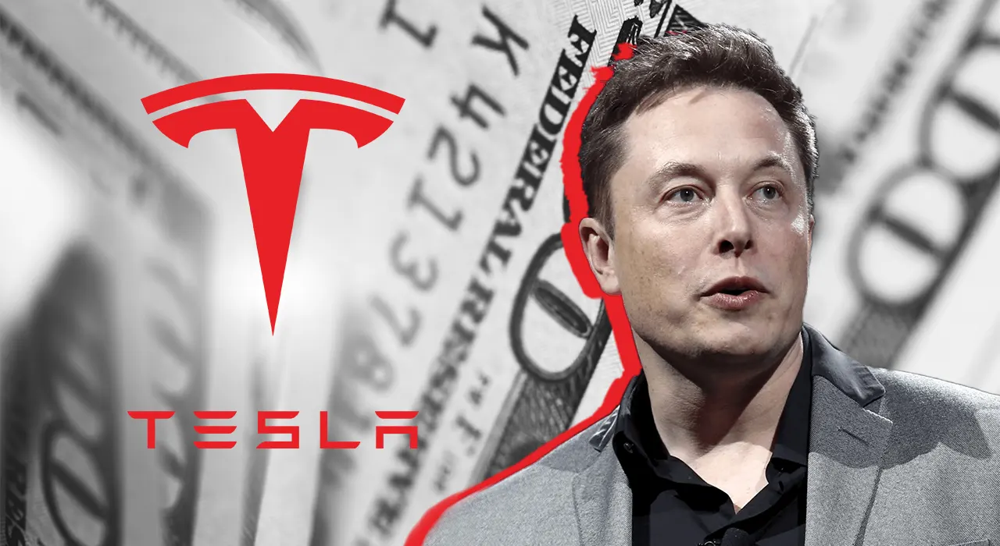

Ilon Mask

И́лон Рив Маск[* 1] (англ. Elon Reeve Musk, МФА род. 28 июня 1971[1][2][…], Претория, ЮАР) —
американский предприниматель, инженер[5] и миллиардер. Основатель, генеральный директор и главный инженер
компании SpaceX; инвестор, генеральный директор и архитектор продукта компании Tesla; основатель The Boring
Company; соучредитель Neuralink и OpenAI; владелец Twitter (X).
7 января 2021 года, с состоянием по оценочным данным в 185 млрд $, впервые стал богатейшим человеком планеты,
сместив на второе место основателя Amazon Джеффа Безоса[6]. 1 ноября 2021 года стал первым человеком в истории,
чьё состояние достигло отметки в 300 млрд $[7]. На ноябрь 2024 года состояние Маска оценивалось уже в $348 млрд
(первое место в мире; состояния Дж. Безоса и Л. Эллисона, соответственно, второе и третье)[8]. 11 декабря 2024
года первым в истории человеком с состоянием в 400 млрд долларов[9].
Маск родился и вырос в Претории, ЮАР. Некоторое время учился в Преторийском университете, а в 17 лет переехал в
Канаду. Поступил в Университет Куинс в Кингстоне и через два года перевёлся в Пенсильванский университет, где
получил степень бакалавра по экономике и физике. В 1995 году переехал в Калифорнию, чтобы учиться в Стэнфордском
университете, но вместо этого решил заняться бизнесом и вместе со своим братом Кимбалом[англ.] стал
соучредителем компании Zip2, занимавшейся разработкой программного обеспечения для интернета. В 1999 году
компания была приобретена Compaq за 307 миллионов долларов. В том же году Маск стал соучредителем онлайн-банка
X.com, который в 2000 году конгломеративным путём консолидировался с Confinity и образовал PayPal. В 2002 году
компания была куплена eBay за 1,5 миллиарда долларов.
В 2002 году Маск основал SpaceX, компанию по производству аэрокосмической техники и оказанию услуг космического
транспорта, генеральным директором и главным инженером которой он является. В 2004 году он присоединился к
производителю электромобилей Tesla в качестве председателя совета директоров и архитектора проекта, а в 2008
году стал её генеральным директором. В 2006 году он помог создать SolarCity, компанию по предоставлению услуг в
области солнечной энергии, которая впоследствии была приобретена Tesla и стала Tesla Energy. В 2015 году он стал
соучредителем OpenAI, некоммерческой исследовательской компании, которая занимается продвижением искусственного
интеллекта. В 2016 году он стал соучредителем Neuralink, нейротехнологической компании, занимающейся разработкой
интерфейсов мозг-компьютер, и основал The Boring Company, компанию по строительству туннелей. Маск предложил
идею Hyperloop — высокоскоростную систему транспортировки на вакуумном поезде. В 2022 году стал владельцем
Twitter за 44 миллиарда долларов[10].
За выдающиеся заслуги перед наукой 9 мая 2018 года удостоен членства Лондонского королевского общества[11][12].
В декабре 2021 года журнал Time признал Илона Маска
Bill Gates

William Henry Gates III (born October 28, 1955) is an American businessman and philanthropist best known for
co-founding the software company Microsoft with his childhood friend Paul Allen. He later held the positions of
chairman, chief executive officer (CEO), president, and chief software architect of the company. Gates was also
its largest individual shareholder until May 2014.[a] He was a pioneer of the microcomputer revolution of the
1970s and 1980s.
Gates was born and raised in Seattle, Washington. In 1975, he and Allen founded Microsoft in Albuquerque, New
Mexico. Gates led the company as its chairman and chief executive officer until stepping down as CEO in January
2000, succeeded by Steve Ballmer, but he remained chairman of the board of directors and became chief software
architect. During the late 1990s, he was criticized for his business tactics, which were considered
anti-competitive.
In June 2008, Gates transitioned into a part-time role at Microsoft and full-time work at the Bill & Melinda
Gates Foundation, the private charitable foundation he and his then-wife Melinda had established in 2000. He
stepped down as chairman of the Microsoft board in February 2014 and assumed the role of technology adviser to
support newly appointed CEO Satya Nadella. In March 2020, Gates left his board positions at Microsoft and
Berkshire Hathaway to focus on his philanthropic efforts on climate change, global health and development, and
education.
Since 1987, Gates has been included in the Forbes list of the world's top billionaires. From 1995 to 2017, he
held the title of the wealthiest person in the world every year except in 2008 and from 2010 to 2013. In 1999,
he became the first ever centibillionaire when his net worth briefly surpassed US$100 billion. Since leaving
day-to-day operations at Microsoft in 2008, Gates has pursued other business and philanthropic endeavors.
He is the founder and chairman of several companies, including BEN, Cascade Investment, TerraPower, Gates
Ventures, and Breakthrough Energy. He has donated to various charitable organizations and scientific research
programs through the Bill & Melinda Gates Foundation, reported to be the world's largest private charity.
Through the foundation, he led an early 21st century vaccination campaign that significantly contributed to the
eradication of the wild poliovirus in Africa. In 2010, Gates and Warren Buffett founded the Giving Pledge,
whereby they and other billionaires pledge to give at least half of their wealth towards philanthropy.